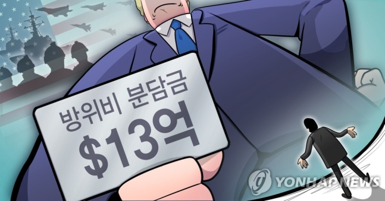

코너 몰린 트럼프 방위비 협상 지렛대·국면전환용 카드 꺼내들 위험성 우려
한반도 긴장고조 속 현실화시 엄청난 후폭풍…트럼프도 일단 지난 4월 선그어
(워싱턴=연합뉴스) 송수경 특파원 = 도널드 트럼프 미국 대통령의 측근으로 꼽히는 리처드
그리넬 전 독일 주재 미국대사가 한국을 포함한 해외 주둔 미군의 감축 가능성을 언급,
미묘한 파장이 일고 있다.
이러한 언급은 트럼프 대통령이 방위비 등에 대한 불만으로 인해 주독 미군 약 9천500명을
감축하라고 국방부에 지시했다는 언론 보도가 지난 5일(현지시간) 나온 이후 한국에 미칠
영향을 놓고 설왕설래가
이어지던 가운데 나온 것이다.
그리넬 전 대사는 11일 독일 일간 빌트와의 인터뷰에서 트럼프 대통령이 해외 주둔 미군을
줄이겠다는
장기적인 계획 속에서 주독 미군 감축을 지시했다면서 감축 대상 국가로 한국과
일본, 아프가니스탄,
시리아, 이라크를 언급했다.
그리넬 전 대사는 지난 2월 미국 정보기관을 총괄하는 국가정보국(DNI)의 국장 대행으로
임명돼 지난달 22일 존 랫클리프 신임 국장이 상원 인준 절차를 거쳐 정식 임명될 때까지
3개월간 미국의 국가정보 수장을 맡을 정도로 트럼프 대통령의 신임이 두터운 '충성파'
인사이다.
트럼프 대통령은 지난 4월 20일 자신이 한국의 방위비 제안을 거절했다면서 3월말 타결
목전까지 갔던 잠정합의안을 '비토'한 사실을 인정, "우리는 8천500마일 떨어진 다른 나라를
방어하기 위해 군대에 지출하고 있다"며 추가 증액 요구를 재확인하면서도 방위비 협상은
주한미군 감축에 관한 것은 아니라고 선을 그은 바 있다.
그럼에도 예측불허의 즉흥적이고 충동적인 '트럼프 스타일'을 감안할 때 상황에 따라
주한미군 감축 카드를 뽑아 들 가능성이 있는 것 아니냐는 관측이 주독미군 감축 보도를
계기로 다시 불거졌다.
여기에 그리넬 전 대사의 언급이 기름을 부은 격이 됐다.
11차 주한미군 방위비 분담금 협정(SMA)이 장기 표류 조짐을 보이는 가운데서다.
트럼프 대통령이 출구가 보이지 않는 방위비 협상의 지렛대로 삼기 위해 주한미군 카드를
꺼내 대선용 카드로 활용할 가능성에 대한 우려가 다시 수면 위로 올라오게 된 상황인 셈이다.
이는 신종 코로나바이러스 감염증(코로나19) 재확산과 '흑인 사망' 시위사태 대응 논란, 경기
악화, 지지율 하락 등이 겹치면서 재선가도에 빨간불이 켜진 트럼프 대통령이 대선 과정에서
국면 전환 내지 국내용 성과 창출이 급한 상황에 내몰리면서 선거용 치적쌓기를 위해 불쑥
주한미군 감축 문제를 꺼낼 수도 있다는 위험성과도 맞닿아있다.
12일로 6·12 북미 싱가포르 정상회담이 2주년을 맞은 가운데 북한이 대남, 대미 공세를 높이
면서 한반도 긴장도는 점점 높아지고 있다.